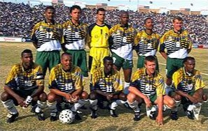

South AfricaThe South Africa national soccer team represents South Africa in men's international soccer and is run by the South African Football Association, the governing body for Soccer in South Africa. Nicknamed Bafana Bafana (The Boys in Zulu), the team is a member of both FIFA and Confederation of African Football (CAF).
-

Emblem
-

Nickname(s)
Bafana Bafana
-

Association
South African Football Association
SAFA
-

Confederation
CAF
Africa
-

FIFA code
RSA
- 
Appearances
3
first in 1998
-

Best result
Group Stage
1998, 2002, 2010
1998
-

Philippe Troussier
Head Coach
(France)
-

1. Hans Vonk
Goalkeeper
Born - 30 January 1970
Aged 28
Caps 0
Club - Heerenveen (Netherlands)
-

16. Brian Baloyi
Goalkeeper
Born - 16 March 1974
Aged 24
Caps 8
Club - Kaizer Chiefs
-

22. Paul Evans
Goalkeeper
Born - 28 December 1973
Aged 24
Caps 0
Club - Supersport United
-

23. Simon Gopane
Goalkeeper
Born - 26 December 1970
Aged 27
Caps 1
Club - Bloemfontein Celtic
-

2. Themba Mnguni
Defender
Born - 16 December 1973
Aged 24
Caps 3
Club - Mamelodi Sundowns
-

3. David Nyathi
Defender
Born - 22 March 1969
Aged 29
Caps 35
Club - St. Gallen (Switzerland)
-

4. Willem Jackson
Defender
Born - 26 March 1972
Aged 26
Caps 12
Club - Orlando Pirates
-

5. Mark Fish
Defender
Born - 14 March 1974
Aged 24
Caps 37
Club - Bolton Wanderers (England)
-

19. Lucas Radebe
Defender
Born - 12 April 1969
Aged 29
Caps 41
Club - Leeds United (England)
-

21. Pierre Issa
Defender
Born - 12 September 1975
Aged 22
Caps 1
Club - Marseille (France)
-

7. Quinton Fortune
Midfielder
Born - 21 May 1977
Aged 21
Caps 6
Club - Atlético Madrid (Spain)
-

8. Alfred Phiri
Midfielder
Born - 22 June 1974
Aged 23
Caps 2
Club - Vanspor (Turkey)
-

10. John Moshoeu
Midfielder
Born - 18 December 1965
Aged 32
Caps 44
Club - Fenerbahçe (Turkey)
-

11. Helman Mkhalele
Midfielder
Born - 20 October 1969
Aged 28
Caps 35
Club - Kayserispor (Turkey)
-

15. Doctor Khumalo
Midfielder
Born - 26 June 1967
Aged 30
Caps 43
Club - Kaizer Chiefs
-

18. Lebogang Morula
Midfielder
Born - 22 December 1968
Aged 29
Caps 0
Club - Vanspor (Turkey)
-

20. William Mokoena
Midfielder
Born - 31 March 1975
Aged 23
Caps 0
Club - Manning Rangers
-

6. Phil Masinga
Forward
Born - 28 June 1969
Aged 28
Caps 41
Club - Bari (Italy)
-

9. Shaun Bartlett
Forward
Born - 31 October 1972
Aged 25
Caps 29
Club - Cape Town Spurs
-

12. Brendan Augustine
Forward
Born - 26 October 1971
Aged 26
Caps 26
Club - LASK (Austria)
-

13. Delron Buckley
Forward
Born - 7 December 1977
Aged 20
Caps 0
Club - VfL Bochum (Germany)
-

14. Jerry Sikhosana
Forward
Born - 8 June 1969
Aged 29
Caps 9
Club - Orlando Pirates
-

17. Benni McCarthy
Forward
Born - 12 November 1977
Aged 20
Caps 10
Club - Ajax (Netherlands)